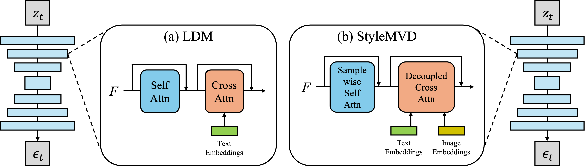

Method

The overview of StyleMVD pipeline. We first render the input textured mesh to generate condition images and view prompts based on the camera poses. Text embeddings are then extracted from the view prompts, while an image embedding is obtained from the input style image. Each view-dependent text embedding is concatenated with the image embedding and forwarded into the StyleMVD with condition images. After the view-dependent denoising process, the stylized images are unprojected onto the input mesh.

Illustrations of the U-Net architectures in (a) Latent Diffusion Model (LDM) and (b) StyleMVD. The basic blocks of U-Net in LDM comprise a residual block, self-attention, and cross-attention, initially designed to accept only text embeddings. In our StyleMVD, we modify the self-attention to sample-wise self-attention and the cross-attention to decoupled cross-attention to facilitate 3D mesh texture stylization from the reference image.